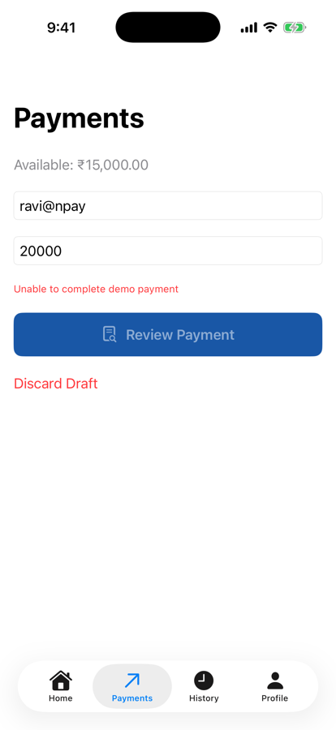

Unit 04 · Lesson 4.6
Domain Models, Use Cases
& Clean Architecture
Who owns the business rules of sending money? Not the screen, not the database: a use case.
Lesson 4.6 · Outcomes
By the end, you will be able to explain
Model money and recipients as value objects
Turn form text into an immutable command
Write a use case for one business operation
Apply the dependency rule
Enforce concurrency-sensitive rules at the mutation
Submit exactly what the user reviewed
Lesson 4.6 · Where we are
Today: the payment operation itself
Unit 04 · Application Architecture & MVVM
Part 1
Domain models
Business concepts, not screens
Part 1 · Our engineering milestone (sections 1–2)
A component that is the operation
- Money, Account, Payment
- Recipient, Transaction, Payment status
var amountText = "1500.50" // form let amountPaise = 150_050 // domain
- “1500.” is fine while typing
- It isn’t a payment amount
Part 2
Value objects
Invalid states hard to represent
Part 2 · PaymentAmount and PaymentRecipient (sections 3–4)
Throwing initializers guard the invariants
struct PaymentAmount: Equatable, Sendable {
let paise: Int
init(paise: Int) throws {
guard paise > 0 else {
throw PaymentDomainError.invalidAmount
}
self.paise = paise
}
}
struct PaymentRecipient: Equatable, Sendable {
let identifier: String
init(_ identifier: String) throws {
let trimmed = identifier.trimmingCharacters(
in: .whitespacesAndNewlines)
guard !trimmed.isEmpty else {
throw PaymentDomainError.invalidRecipient
}
self.identifier = trimmed
}
}PaymentAmount(paise: 150050) → 150050
PaymentAmount(paise: 0) → throws invalidAmount
PaymentAmount(paise: -100) → throws invalidAmount
PaymentRecipient(" ravi@npay ") → "ravi@npay"
PaymentRecipient(" ") → throws invalidRecipient
- A PaymentAmount is always positive
- A PaymentRecipient is never blank
- Positive can still exceed the balance or a limit
Part 2 · A domain payment request (section 5)
From text to command
struct SendPaymentCommand: Sendable {
let recipient: PaymentRecipient
let amount: PaymentAmount
}- No Binding, TextField or View
- A meaningful application request
Part 3
Use cases
One operation the application supports
Part 3 · What is a use case? Build one (sections 6–7)
SendPaymentUseCase, version 1
struct SendPaymentUseCase {
let repository: any AccountRepository
func execute(_ command: SendPaymentCommand)
async throws -> PaymentRecord {
let snapshot = try await repository.fetchSnapshot()
guard command.amount.paise <= snapshot.balancePaise else {
throw PaymentDomainError.insufficientBalance
}
let perPaymentLimitPaise = 100_000_00
guard command.amount.paise <= perPaymentLimitPaise else {
throw PaymentDomainError.limitExceeded
}
return try await repository.recordPayment(
recipient: command.recipient.identifier,
amountPaise: command.amount.paise)
}
}- An operation the app supports
- Not a screen, a table or a request
- Snapshot; check balance
- Check a ₹1,00,000 limit (illustrative)
- Record; return the record
- The balance can change before recordPayment
- The repository must check again
Part 3 · Why not every rule in the repository? (section 8)
Policy in the use case; integrity at the data
| Rule | Use case | Repository |
|---|---|---|
| Amount positive | Domain value object | Defensive validation |
| Recipient non-empty | Domain value object | Defensive validation |
| Per-payment limit | Use-case policy | May also need enforcement |
| Sufficient balance | Preliminary check | Atomic final check |
| Record transaction | Requests the operation | Performs it |
- Use case: application policy
- Repository: data integrity, data operations
- Authoritative limits and balance checks: the trusted backend
Part 4
Testing the domain
Rules, without a simulator
Part 4 · Test the use case and policy (sections 14, 15, 22)
Three labs, no SwiftUI
Payment: B54D1D0A-6633-4F8C-8628-54153C2E2188
Balance: 2349950 (₹25,000.00 − ₹1,500.50)
Payment limit enforced
Limit correctly enforced
- The operation end to end, in memory
- An application policy
- The policy alone: no repository at all
- No simulator, form or navigation stack
- Lesson 4.9: a real test suite
Part 5
The dependency rule
Source code points toward policy
Part 5 · What is the Dependency Rule? (sections 10–11)
Infrastructure depends on the domain, not the reverse
Arrows: source-code dependencies. Calls still flow out to infrastructure, through domain-owned abstractions.
- The use case depends on the protocol
- The actor implements it
- Not now: a struct is fine
- Add one for ViewModel tests if needed
- Abstractions where they earn it
- Not layers to imitate a diagram
Part 6
Rules under concurrency
Check early; enforce at the mutation
Part 6 · Payment limits and concurrency (section 16)
Two ₹1,500 payments at once from ₹2,000
early checks don’t overlap (as run):
A recorded; B “Insufficient balance” (early check)
20 ms latency in fetchSnapshot (ours):
both early checks see ₹2,000
A “Unable to complete payment”; B recorded
balance ₹500: the repository caught it
- The early check is useful, not final
- The atomic repository check is final
- The repository’s own error isn’t mapped
- So the user saw the generic message
- Final check and mutation together, at the authoritative boundary
Part 6 · A daily limit (section 17)
Cumulative rules need the authoritative state
| Payment | Amount | Daily total (limit ₹50,000) |
|---|---|---|
| First | ₹20,000 | ₹20,000 |
| Second | ₹15,000 | ₹35,000 |
| Third | ₹20,000 | ₹55,000: rejected |
A hypothetical limit, for teaching.
checked from a snapshot, then recorded: 3 accepted, ₹60,000
rule inside one actor call: 2 accepted, ₹40,000
- Defined: domain / application
- Enforced: where today’s total is checked and updated together
- Express rules in the domain
- Enforce concurrency-sensitive invariants at the mutation
- Production: the trusted backend
Part 6 · Improve our use-case design (section 18)
Static policy here; the balance at the repository
struct PaymentPolicy: Sendable {
let maximumPerPaymentPaise: Int
func validate(_ amount: PaymentAmount) throws {
guard amount.paise <= maximumPerPaymentPaise else {
throw PaymentDomainError.limitExceeded
}
}
}
struct SendPaymentUseCase {
let repository: any AccountRepository
let policy: PaymentPolicy
func execute(_ command: SendPaymentCommand)
async throws -> PaymentRecord {
try policy.validate(command.amount)
return try await repository.recordPayment(
recipient: command.recipient.identifier,
amountPaise: command.amount.paise)
}
}- No snapshot, no early balance check
- Policy first, then the atomic mutation
- No stale-balance decision
- The policy is testable alone (section 22)
PaymentPolicy(maximumPerPaymentPaise: 10_000_000) // ₹1,00,000, illustrative
Part 7
Into NPay
Use case, factory, reviewed command
Part 7 · ViewModel and composition root (sections 12–13, 19–20)
The ViewModel delegates the operation
private let sendPayment: SendPaymentUseCase
init(sendPayment: SendPaymentUseCase) {
self.sendPayment = sendPayment
}
func submit(_ command: SendPaymentCommand) async -> PaymentRecord? {
guard !isSubmitting else { return nil }
isSubmitting = true
defer { isSubmitting = false }
do {
let result = try await sendPayment.execute(command)
recipient = ""; amountText = ""; errorMessage = nil
return result
} catch {
errorMessage = "Unable to complete demo payment"
return nil
}
}@MainActor
enum NPayFactory {
static func makePaymentViewModel(
repository: any AccountRepository
) -> PaymentViewModel {
let policy = PaymentPolicy(
maximumPerPaymentPaise: 10_000_000)
let useCase = SendPaymentUseCase(
repository: repository, policy: policy)
return PaymentViewModel(sendPayment: useCase)
}
}- Parsed the fields itself; specific messages
- Section 20’s: one generic message
Part 7 · Submit exactly what was reviewed (section 20)
The command is the contract with the user
- Form → review sheet → Confirm → success
- Opening review never pays; only Confirm does
the user reviews ₹1,500.50, then the form changes to 2000:
submit() reading the fields (section 12): paid 200000
submit(reviewedCommand) (section 20): paid 150050
- Review:
prepareCommand()builds the command - The sheet shows it; Confirm submits that same value

The sheet shows the command
Part 7 · Navigation after asynchronous submission (section 21)
Success navigates; failure never does
| NPay, simulator | Result |
|---|---|
| ₹1,500.50 | Payment Recorded; ₹23,499.50; History top “Sent to ravi@npay”; form cleared |
| ₹20,000, ₹10,000 left during review | “Unable to complete demo payment”; no navigation; balance unchanged; draft kept |
- A task can finish after the user has left: Lesson 4.7

Failure: no success
Lesson 4.6 · Recap
What to remember
Values that can’t be invalid
PaymentAmount > 0; PaymentRecipient non-blank
A use case is the operation
policy first; the repository mutates atomically
Submit what was reviewed
the command, not the fields: 150050, not 200000
Review
Check your understanding
Check your understanding · 1 of 11
What is a domain value object?
- A SwiftUI screen
- A type representing a domain concept and its invariants
- A database connection
PaymentAmount can’t be zero or negative.
Common trap: Treating every struct as a value object.
Check your understanding · 2 of 11
Should SendPaymentUseCase import SwiftUI?
Foundation only: it ran on the Mac with no UI.
Common trap: Letting the operation depend on presentation.
Check your understanding · 3 of 11
Why is an early balance check insufficient for final payment authorization?
- SwiftUI doesn’t support integers
- The balance may change before mutation
- Repositories can’t throw
With latency both early checks saw ₹2,000.
Common trap: Trusting a snapshot.
Check your understanding · 4 of 11
Where should the authoritative balance check occur?
- Inside BalanceCard
- Only in TextField validation
- At the atomic mutation boundary
The repository caught the overdraft.
Common trap: Checking far from the write.
Check your understanding · 5 of 11
Why submit the immutable reviewed command?
- To ensure submitted data matches what was reviewed
- To improve animation speed
- To eliminate all concurrency issues
Fields changed to 2000; the command still paid 150050.
Common trap: Re-reading mutable fields on Confirm.
Check your understanding · 6 of 11
Does actor isolation automatically enforce payment idempotency?
The same request twice was recorded twice (4.5).
Common trap: Confusing safety with idempotency.
Check your understanding · 7 of 11
What should happen if payment submission fails?
- Clear the account balance
- Navigate to success anyway
- Show an error and avoid success navigation
Stale review: error shown, paymentsPath empty.
Common trap: Navigating before the result.
Check your understanding · 8 of 11
Can PaymentPolicy be tested without launching SwiftUI?
“Limit correctly enforced”, on the Mac.
Common trap: Assuming rules need the app to test.
Check your understanding · 9 of 11
A daily limit of ₹50,000 is checked in the use case from a snapshot, then the payment is recorded. Three ₹20,000 payments start at once. How many are accepted?
- 2
- 3
- 0
All saw ₹0 spent today; inside the actor call: 2.
Common trap: Assuming a check before an await still holds.
Check your understanding · 10 of 11
The user reviews ₹1,500.50; before Confirm the amount field changes to 2000. Section 12’s parameterless submit() pays…
- ₹1,500.50
- ₹2,000
- Nothing
It reads the fields: 200000 paise.
Common trap: Assuming the sheet’s values are submitted.
Check your understanding · 11 of 11
From Lesson 4.5: after a payment, does a DashboardViewModel snapshot update itself?
It showed ₹25,000.00 until refresh().
Common trap: Expecting snapshots to observe the repository.
Lesson 4.6 · Where this goes next
Where this goes next
| Lesson | Topic | Builds on today |
|---|---|---|
| 4.7 | UI state modeling | idle, submitting, success, failure; specific error messages |
| 4.9 | Architecture testing | the policy and use-case labs as a test suite |
| Unit 5 | Networking | a remote repository behind the same use case |
| Unit 8 | Concurrency | task lifetime and cancellation after navigation |
Lesson 4.6 · Lab
SendPaymentUseCase
Values, command, policy, use case.
- Add PaymentAmount and PaymentRecipient.
- Add SendPaymentCommand.
- Write PaymentPolicy and SendPaymentUseCase.
- Run sections 14, 15 and 22’s labs.
- Inject the use case through NPayFactory.
- Review a command; Confirm submits it.
- Your domain and use-case files
- Lab output
- The review flow submitting the command
Lesson 4.6 complete
Domain Models, Use Cases
& Clean Architecture
Next: Lesson 4.7 — UI State Modeling